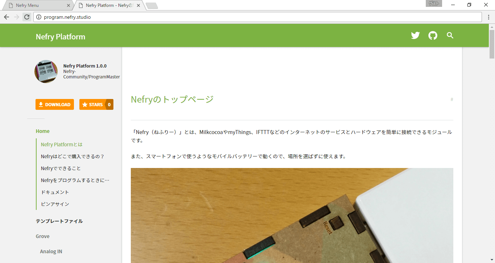
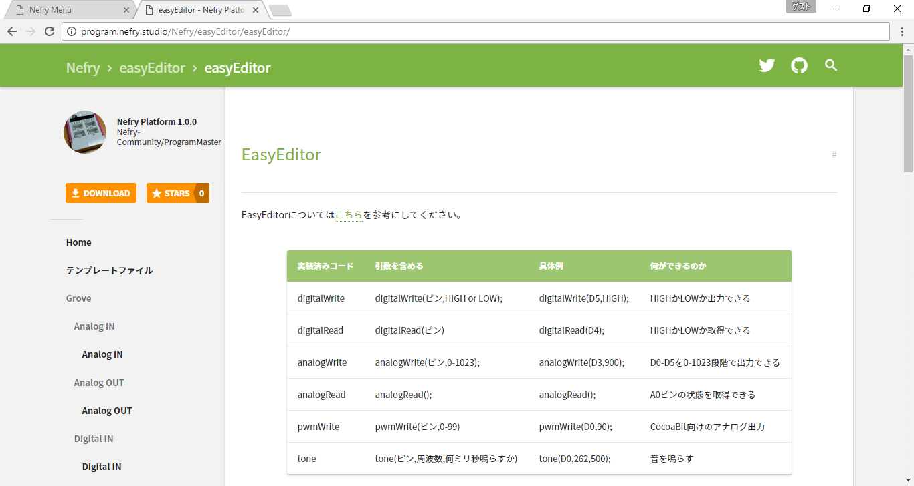
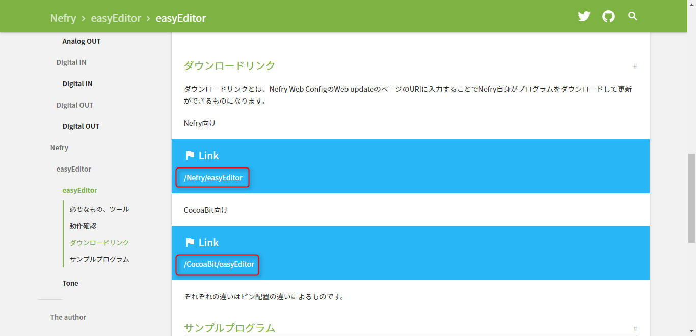
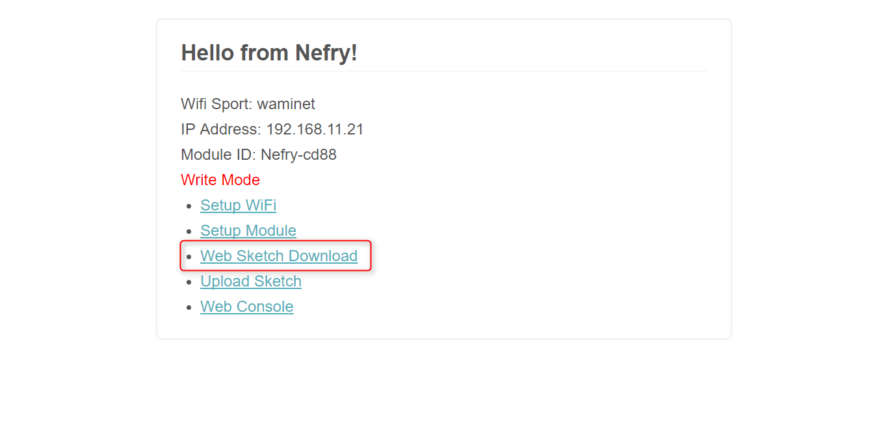
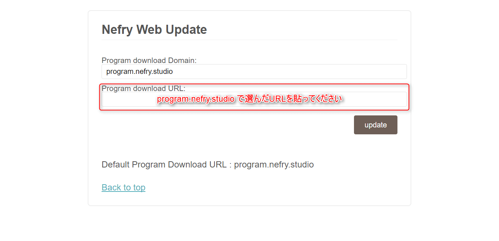
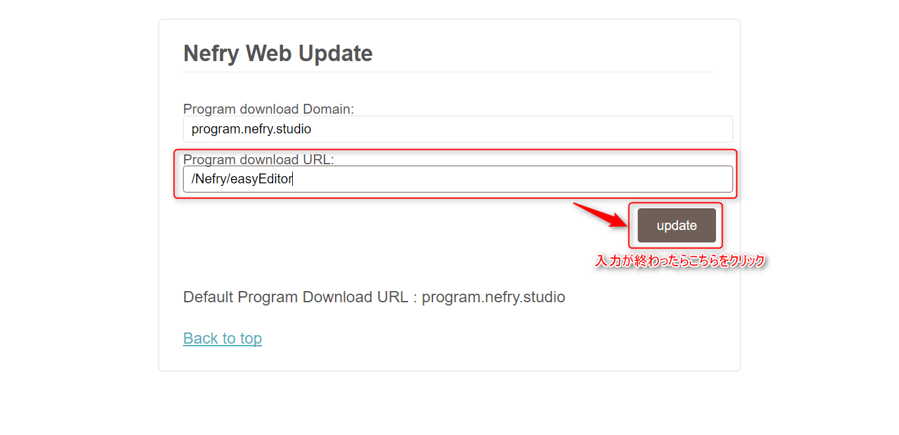
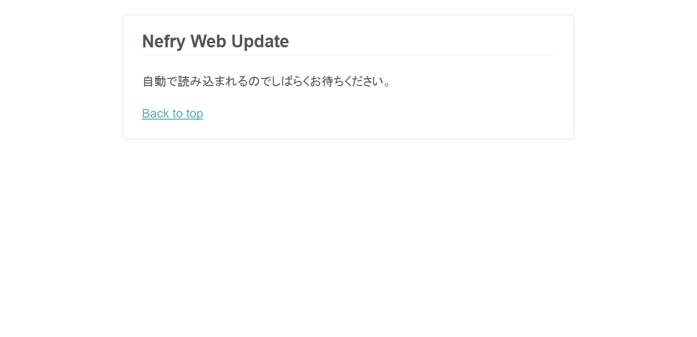
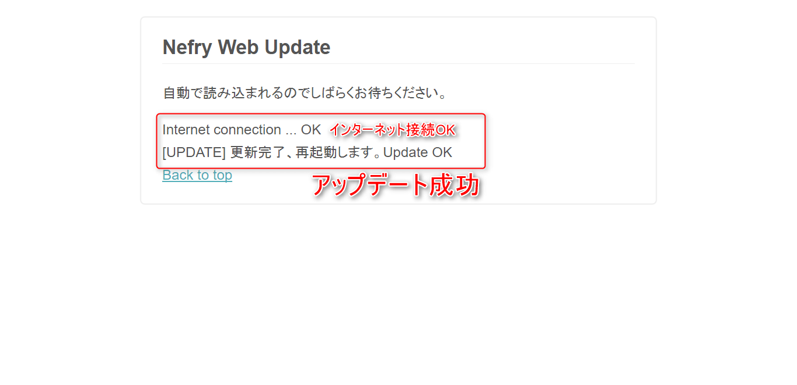
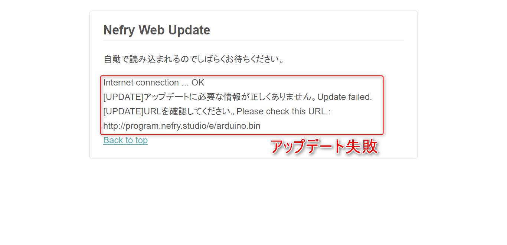

プログラムをダウンロードしてみよう#
Nefryは公開されているプログラムをダウンロードすることができる機能があります！ その機能について紹介していこうと思います。
必要なもの、ツール#
手順を学んでみよう#
１. まずダウンロードしたいプログラムをさがそう
Nefry Platformから必要なページをえらんでください。

例えば、今回はEasyEditorを選んでみました。

ページ中央にあるのダウンロードリンクをコピーしておきましょう。
このときNefryとCocoaBitと別れている場合がありますが、それぞれ合ったものを選択してください。

２. Nefryでの操作を覚えていこう
1. Nefryのページを開こう
NefryのWebページを開き、"Web Sketch Download"をクリックしてください。

2. Nefry Web DownloadでURLを入力しよう

１.で選んだ"program.nefry.studio"のURLを下の欄に入力してください。

ドメインの欄が空白の場合
Nefry ライブラリ 2.2.3以下であるとドメインの欄が空白になっています。
そこに"program.nefry.stuido"を入力してください。
問題なければ"update"ボタンをクリックしてください。
３. アップデート待ってみよう
アップデート中はこちらのページが表示されます。10秒程度でページが切り替わると思いますのでお待ちください。 
アップデートが成功するとこのような表示がでます。

アップデートが失敗するとこのような表示がでます。
Internet connectionでNGと出てた場合、インターネット接続できているか確認してください。
"URLを確認してください。"と出た場合はURLが合っているか確認してください。
URLが合っていてもこのような表示が出る場合、ダウンロードする回線が遅いなど別の原因があると思われます。
